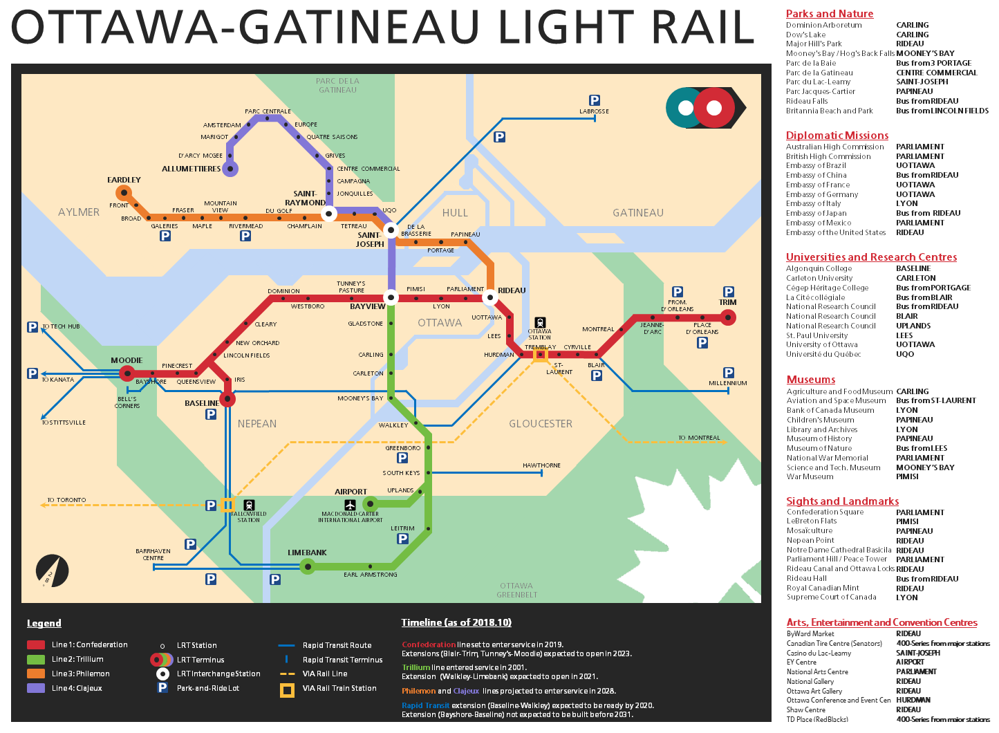

未來輕軌規劃，並與渥太華交通接軌

CBC News 2020/01/31: STO确认加蒂诺将获得轻轨。
現在大眾運輸工具：公交車
STO
（Société de transport de l'Outaouais 渥太华交通运输公司）是渥太华的公共交通提供商，从1971年开始运营公交线路。STO在渥太华有97条公交路线，其中1971年是公交车站。
他们的巴士路线从北部（白金汉）到Jean-Xxiii / Des Pins停靠到南部（Aylmer）到Lamoureux / Vanier停靠，它们最西端的站点是ArrêtDe CourtoisieGande-Allée/ Des Saisons。 （艾尔默（Aylmer）），最东站是莱彭（Lépine）/德斯·伯纳切斯（Des Bernaches）（马森-安格尔斯（Masson-Angers））。
他们的巴士路线从北部（白金汉）到Jean-Xxiii / Des Pins停靠到南部（Aylmer）到Lamoureux / Vanier停靠，它们最西端的站点是ArrêtDe CourtoisieGande-Allée/ Des Saisons。 （艾尔默（Aylmer）），最东站是莱彭（Lépine）/德斯·伯纳切斯（Des Bernaches）（马森-安格尔斯（Masson-Angers））。